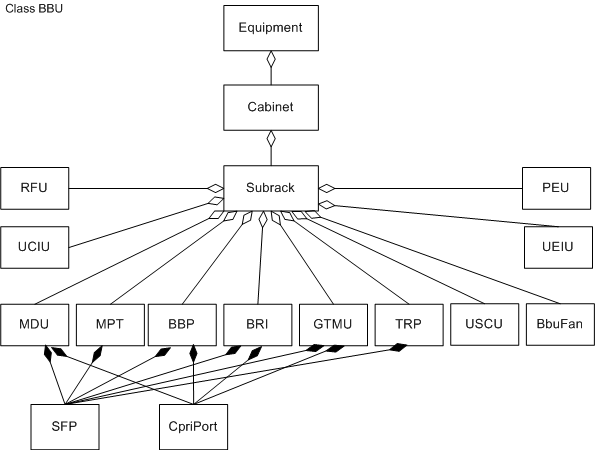

This section describes the functions and concepts of baseband units (BBUs). It also illustrates managed object models (MOMs) and describes the corresponding managed objects (MOs).
Functions and Concepts
A BBU is a baseband processing unit, which can be configured with the following boards:
- MPT: main processing and transmission unit
- BBP: baseband processing unit
- TRP: transmission processing unit of the extension transmission board
- USCU: universal satellite control unit
- UCIU: universal inter-connection infrastructure unit
- UPEU: universal power environment unit
- UEIU: universal environment interface unit
- BbuFan: baseband unit fan
- GTMU: Transmission & Timing & Management Unit
- BRI: baseBand radio interface
- MDU: multimode digital unit
For details about the functions of these boards, see BBU Hardware Description.
Managed Object Model
Figure 1 shows the BBU MOM, which is a subset of the base station MOM.
Figure 1 BBU MOM

The BBU MOs shown in Figure 1 are described as follows:
- Equipment defines an equipment root object, which manages equipment-class MOs.
- Cabinet defines a physical or virtual cabinet.
- A physical cabinet provides various functions such as power distribution, environment monitoring, and surge protection, depending on the cabinet type.
- A virtual cabinet is a container for subracks.
- Subrack defines the attributes of subracks and related operations. A subrack is a board container. A subrack can be physical, for example, a BBU or RFU subrack. It can also be virtual, for example, a PMU or
RRU subrack.
- RFU defines an RFU for a macro base station. The RFU provides ports for communication with an BBP, and processes uplink and downlink RF signals.
- PEU defines a UPEU. This board converts -48 V DC or +24 V DC power into +12 V DC power for other boards in the BBU. A UPEU provides the following environment monitoring ports:
- Eight EXT-ALM ports for environment monitoring.
- Two MON ports for RS485 signal monitoring.
- MDU is short for Multimode Digital Unit. It consists of the master and slave CPUs and performs the functions of transmission, main control, and baseband processing. The master CPU implements the main control and
transmission functions, and the slave CPU implements the baseband processing function.
- MPT defines an MPT. This board performs the functions of main controlling, switching, timing, and transmission.
- BBP defines an BBP. This board processes the uplink and downlink baseband signals and provides CPRI ports for communication with RF units.
- TRP defines a UTRP. This board provides eight E1s/T1s to support IP over E1/T1 transmission.
- UCIU defines a universal cascading interface unit, which connects two BBUs. It provides channels for communication and clock signal transfer between the two BBUs, and also provides the function of BBU topology
scanning.
- USCU defines a USCU. This board has the following functions:
- Provides a reference clock for the MPT.
- Supports the Global Positioning System (GPS) or Global Navigation Satellite System (GLONASS) satellite card.
- Supports external clocks such as the Remote Global Positioning System (RGPS) and building integrated timing supply (BITS) clocks.
- BbuFan defines a FAN. This board dissipates the heat from the BBU.
- UEIU defines a UEIU. This board transmits monitoring and alarm signals from external devices to the LMPT or UMPT. A UEIU provides the following environment monitoring ports:
- Eight EXT-ALM ports for environment monitoring.
- Two MON ports for RS485 signal monitoring.
- GTMU defines a GTMU. This board provides interfaces to receive and send RF signals in GTMU evolution scenarios.
- BRI defines a BRI. This board provides interfaces to receive and send RF signals.
- SFP defines an optical or electrical module for optical-to-electrical conversion. This module transmits signals between the BBU and other devices through fiber optic cables or electrical cables.
- CpriPort defines a CPRI port on an RRU or RFU. This port is used to communicate with an BBP.
Copyright © Huawei Technologies Co., Ltd.